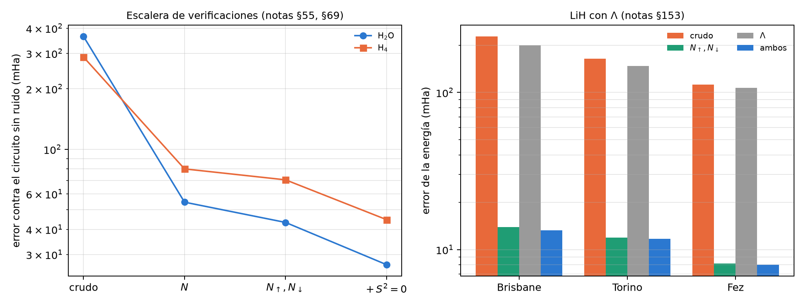
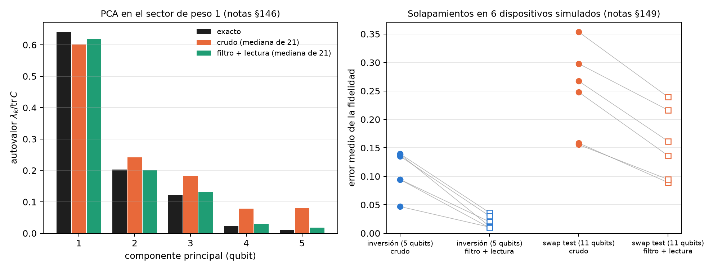

25 Espectroscopía cuántica, PCA y química molecular
El capítulo 24 usó la conservación del número de excitaciones para filtrar dinámica. Este hace lo mismo con espectros y con moléculas, donde el número que se conserva es el de electrones. La lectura media del registro, en la escala del capítulo 1, cuenta los electrones de cada disparo; si el circuito los conserva, ese número es a la vez un testigo de error sin referencia y un filtro. El capítulo sigue esa idea desde un PCA de datos hasta moléculas de 12 qubits, y muestra también dónde deja de alcanzar: cuando el error vive en términos que no se miden en Z. Lo estructural se verifica con código; los resultados en modelos de ruido son los de las corridas registradas de las notas.
25.1 Desde la base: contar electrones con la lectura del registro
En la codificación de Jordan-Wigner cada qubit es un espín-orbital, y su ocupación es \((1-qg_Z)/2\), es decir \((1000-m_Z)/2000\) en m-qg. Sumando sobre el registro,
\[ N_e=\sum_i\frac{1-qg_{Z,i}}{2},\qquad \overline{qg_Z}=1-\frac{2N_e}{n}. \]
Para cualquier circuito que conserve el número de electrones, la lectura media ideal se sabe antes de correr (0 para H\(_2\): 2 electrones en 4 qubits). Que se aparte es un testigo de que el hardware agregó o quitó electrones (el T1 la empuja hacia \(+1\)), y disparo por disparo es un filtro. El filtro es la verificación de simetría conocida (Bonet-Monroig et al. 2018; McArdle et al. 2019); lo que agrega qang es el testigo y su lectura.
25.2 PCA en el sector de peso 1
El PCA cuántico diagonaliza \(\rho=C/\mathrm{tr}\,C\). En la codificación unaria, una mezcla de los vectores de datos cargados (con pesos \(|x_j|^2\)) es exactamente ese \(\rho\), y un circuito de RBS que aplica la rotación del PCA deja el autovalor \(\lambda_k\) en el qubit \(k\) (notas §146). El script lo comprueba con estados exactos: para 5 componentes y 16 datos, la probabilidad de excitación de cada qubit es el autovalor normalizado (0,640, 0,203, 0,122, 0,023, 0,011) a \(2{,}2\cdot10^{-16}\), con 10 RBS en la rotación. Todas las compuertas conservan el peso, así que el filtro se aplica. No es la aceleración del PCA cuántico (5 componentes usan 5 qubits y la rotación se calcula clásicamente): es una prueba de qué tan bien lee un dispositivo un espectro conocido.
En los 21 modelos de ruido de dispositivos IBM de las notas, con las cuatro predicciones registradas cumplidas, la estimación cruda sale sesgada hacia arriba: los disparos que salen del sector agregan excitaciones en todos los qubits (error L1 mediano 0,266). El filtro más la corrección de lectura la baja a 0,048 (4,6 veces menos; de 1,6 a 7,7 según el dispositivo) y ordena bien los cinco autovalores en 18 de 21 dispositivos (crudo: 13). Lo que queda es un aplanamiento del espectro que crece cuando se conservan pocos disparos (FakeKyoto conserva 15 % y falla).
25.3 H\(_2\): el testigo y el filtro
El script verifica la estructura sobre el hamiltoniano de H\(_2\) de las notas (STO-3G, 0,735 Å, 4 qubits): conmuta exactamente con \(N\), con \(N_\uparrow\) y con \(N_\downarrow\); el ansatz que conserva \(N\) llega a la energía exacta (FCI) a \(5\cdot10^{-11}\) mHa, y la lectura media ideal del registro es 0. Hartree-Fock queda 20,3 mHa por encima. Las notas (§21) corrieron el modelo de ruido de fake brisbane con 20 000 disparos y una espera antes de medir que amplifica el T1:
| método | 0 µs | 20 µs | 50 µs |
|---|---|---|---|
| Hartree-Fock clásico | 20,3 | 20,3 | 20,3 |
| cuántico, crudo | 74 | 140 | 231 |
| + corrección de lectura | 18 | 90 | 188 |
| + lectura + filtro qg | 5,5 | 20 | 30 |
| testigo: lectura media (ideal 0) | +0,011 | +0,057 | +0,122 |
| disparos conservados | 91 % | 83 % | 72 % |
El testigo sube a medida que se pierden electrones. Con el filtro, la energía es 3,2 veces mejor que con la corrección de lectura sola sin espera (6 veces con 50 µs) y 3,7 veces mejor que Hartree-Fock, pero sigue 3,4 veces por encima de la precisión química: el resto está en los 4 términos de tipo XXYY, que un filtro en Z no alcanza, y en errores que conservan \(N\). FCI es exacto y barato a este tamaño: la tabla mide lo que la corrección compra a un cálculo cuántico ruidoso, no una ventaja.
Filtros por espín (§28). El hamiltoniano conserva \(N_\uparrow\) y \(N_\downarrow\) por separado, y cada registro de espín tiene su propia lectura media. Un segundo filtro gratuito, con los mismos disparos: con ruido despolarizante quita 34–37 % más del error que deja el filtro total, pero en fake brisbane la ganancia queda dentro de la dispersión entre semillas (6,5 → 5,9 mHa), porque la fuga de espín es menor que 1 %. El testigo de fuga dice cuándo vale la pena.
25.4 Por qué el filtro ayuda a H\(_2\) y no a LiH
Con LiH (6 qubits) el filtro de §21 no hizo nada. Las notas (§50) separaron las causas: alcance (el filtro actúa sólo sobre los disparos en Z), enrutamiento y profundidad.
| caso | compuertas 2q | grupo Z crudo → filtrado | grupos X/Y crudos | total crudo → filtrado |
|---|---|---|---|---|
| H\(_2\), todos con todos | 3 | 13,0 → 4,9 | 0,9 | 13,9 → 5,9 |
| H\(_2\), brisbane | 6 | 20,6 → 2,8 | 2,4 | 23,0 → 5,2 |
| LiH, todos con todos, 1 capa | 20 | −2,2 → −1,9 | 26,2 | 24,0 → 24,3 |
| LiH, brisbane, 3 capas | 60 | −30,5 → −18,0 | 165,8 | 135,3 → 147,9 |
La razón principal es el alcance. En H\(_2\) el error está en el grupo Z, donde el filtro actúa; en LiH está en los 16 grupos X/Y, donde un filtro en Z no mira, y ni un filtro perfecto bajaría de esa columna. El enrutamiento no es la causa: el ansatz de LiH es de vecinos cercanos y pide las mismas compuertas en un dispositivo todos con todos. El intento de qang de reescalar los grupos X/Y con la fracción conservada falló: corrige de más 2–3 veces, porque el ruido local de compuertas no es un despolarizante global.
25.5 Verificaciones que alcanzan todos los grupos
Si el problema es el alcance, la solución es una verificación que conmute con todos los términos (§52): la paridad del número de electrones en un ancilla (6 CNOT), y \(N\) módulo 4 con un segundo ancilla, que atrapa también los errores que cambian \(N\) en 2. Con LiH de 3 capas y ruido todos con todos, paridad más módulo 4 bajan el error de 83,9 a 13,4 mHa (la mejor marca de §50 era 76,6), descartando 28 % de los disparos: por primera vez en el repositorio, LiH queda (en ese modelo) por debajo de Hartree-Fock. En el modelo de IonQ forte-1 (§53) la verificación módulo 4 sobrevive (3,8 veces menos error, la paridad sola 1,25 veces), pero el resultado queda por encima de Hartree-Fock.
Moléculas más grandes (§54, §55, §69), con proyecciones ideales:
| molécula | qubits | crudo | \(N\) | \(N_\uparrow\), \(N_\downarrow\) | \(+\,S^2=0\) |
|---|---|---|---|---|---|
| H\(_2\)O | 8 | 363,9 | 54,6 | 43,3 | 26,7 |
| H\(_4\) | 8 | 287,5 | 79,9 | 70,5 | 44,7 |
- Las verificaciones de número siguen funcionando hasta 12 qubits, pero alcanzan una parte cada vez menor del error: la parte que cambia \(N\) baja de 92 % (LiH, 60 CX) a 67 % (H\(_6\), 132 CX). El resto conserva \(N\) y ninguna verificación de número lo ve.
- Separar por espín recupera parte (de 75,7 a 66,8 mHa en H\(_4\)).
- La proyección sobre el singlete \(S^2=0\) quita 37–38 % más, la mayor ganancia desde §52, pero \(S^2\) no es diagonal en Z: pide medir 640 cadenas de Pauli para el proyector y 2064–3456 para el proyector por \(H\), contra 105–185 para \(H\).
Λ como tercer filtro (§153). Una molécula lineal conserva \(\Lambda\), la proyección del momento angular orbital sobre el eje. Con los orbitales π escritos como π± (\(m_l=\pm1\)), \(\Lambda\) es diagonal y se verifica disparo por disparo con sólo los cuatro qubits π, así que alcanza 29 de los 317 grupos de medición de LiH (10 qubits), contra 1 del filtro de número. La predicción registrada se cumplió a medias: donde \(N_\uparrow,N_\downarrow\) ya se aplica, \(\Lambda\) no agrega casi nada (13,9 → 13,3 mHa en FakeBrisbane), porque cambiar \(\Lambda\) sin cambiar \(N\) pide dos errores. El alcance extra es real y no paga: en los 28 grupos donde sólo actúa \(\Lambda\), descarta 4–10 % de los disparos y su error casi no se mueve, porque el error que importa ahí está en los qubits σ medidos en X/Y.

25.6 Solapamientos: test de inversión contra swap test
La fidelidad \(F=|\langle x|y\rangle|^2\) de dos estados unarios se puede estimar de dos maneras (§149). El test de inversión carga \(x\), deshace el cargador de \(y\) y lee la probabilidad de un estado de la base: 5 qubits, todo conserva el peso. El swap test usa 11 qubits y un ancilla, y lee \(P(\text{ancilla}=0)=(1+F)/2\). El script comprueba las dos fórmulas con estados exactos (\(3\cdot10^{-16}\) y \(6\cdot10^{-16}\)). En seis modelos de ruido IBM:
- con el filtro, el test de inversión baja su error de 3,8 a 11,2 veces, hasta 0,010–0,036;
- en el swap test la respuesta está en el ancilla, fuera de la simetría, y el filtro gana sólo 1,4–1,8 veces (error 0,089–0,239);
- un clasificador por fidelidad (40 flores) conserva su precisión sin ruido con los dos métodos, porque comparar dos fidelidades cancela el encogimiento común;
- pero la prueba “¿son iguales?” necesita el valor absoluto: para estados idénticos el test de inversión filtrado lee 0,92–1,00 y el swap test crudo 0,20–0,65.

25.7 Optimización con restricciones: QAOA con “exactamente K”
Elegir exactamente \(K\) de \(n\) vértices es la misma identidad que el número de electrones: \(\overline{qg_Z}=1-2K/n\), 0,25 para \(K=3\) de \(n=8\) (notas §30). El script comprueba que con el mezclador XY (que conserva el peso, desde un estado de Dicke) la distribución ideal es 100 % factible con ángulos al azar, mientras que el QAOA con penalización deja entre 10 y 45 % de masa factible. En un dispositivo todos con todos, el filtro duplica la probabilidad de encontrar el óptimo del mezclador XY (0,150 → 0,278 con \(p=1\); 0,177 → 0,366 con \(p=2\)), y en los modelos de IonQ también (1,8–2,6 veces, §38). En fake brisbane, con el enrutamiento, todo cae al nivel de elegir un conjunto factible al azar, y la fracción conservada lo avisa (0,24–0,33, cerca de 0,22 para un registro mezclado). El clásico gana: un algoritmo voraz llega al 98,5 % del óptimo. Los ingredientes qg mejoran QAOA frente a QAOA, no frente a la optimización clásica.
25.8 Lo que queda pendiente
Ningún resultado de este capítulo corrió en hardware. Las notas dejaron registrado un criterio para LiH con la verificación módulo 4 en una QPU de IonQ (§53: vale si paridad más módulo 4 bajan el error al menos 2,5 veces en cada corrida y la paridad sola menos de 1,5), con un costo estimado de unos 1100–2200 dólares, que no entró en el presupuesto.
25.9 Sin qang y con qang
| acción | sin qang | con qang | diferencia |
|---|---|---|---|
| leer un espectro PCA | crudo: sesgado hacia arriba (L1 0,266) | filtro de peso: L1 0,048 | a favor: 4,6 veces menos error; es del filtro |
| detectar pérdida de electrones | comparar con una referencia | lectura media del registro, ideal conocida | a favor: testigo sin referencia |
| energía de H\(_2\) | corrección de lectura: 18 mHa | + filtro: 5,5 mHa | a favor: 3,2 a 6 veces; la verificación de simetría es conocida |
| energía de LiH con filtro en Z | — | no mejora: el error está en X/Y | ninguna: el testigo diagnostica, el filtro no alcanza |
| reescalar X/Y con la fracción conservada | — | corrige de más 2–3 veces | en contra |
| verificaciones con ancilla | paridad: un tercio | + \(N\) mod 4: 6–8 veces menos error | a favor, con 1–2 ancillas; es extensión de lo conocido |
| moléculas más grandes | — | la parte alcanzable baja de 92 a 67 % | a favor, decreciente |
| filtro de \(\Lambda\) | — | alcanza 29 grupos más y no paga | ninguna donde ya hay filtro de espín |
| fidelidad absoluta | swap test crudo: 0,20–0,65 para estados iguales | inversión filtrada: 0,92–1,00 | a favor del test de inversión filtrado |
| QAOA con restricción | penalización: nivel de azar | mezclador XY + filtro: duplica el éxito | a favor frente a QAOA; en contra frente al voraz clásico |
Balance. Como en el capítulo 24, casi todo lo que se gana es de la verificación de simetría, que es conocida. Lo propio de qang es el testigo: la lectura media del registro dice cuántos electrones hay, y su fracción conservada dice cuánto queda para filtrar. Ese testigo fue lo que llevó del fracaso de §21 con LiH al diagnóstico de alcance de §50 y a las verificaciones de §52. El capítulo deja también los límites medidos: el error que conserva todas las simetrías crece con el tamaño, y una simetría más (\(\Lambda\)) puede alcanzar más grupos sin bajar el error.
25.10 En código
import numpy as np
from qiskit.quantum_info import Statevector
from qang import ibm
x = np.array([0.3, -0.5, 0.2, 0.7, 0.4])
y = np.array([0.1, 0.6, -0.3, 0.5, 0.5])
x, y = x / np.linalg.norm(x), y / np.linalg.norm(y)
sv = Statevector(ibm.unary_overlap_circuit(x, y, measure=False)).data
abs(sv[1]) ** 2, (x @ y) ** 2 # test de inversión: P(sólo el qubit 0 excitado) = F25.11 Resumen
- En Jordan-Wigner, la lectura media del registro cuenta los electrones: \(\overline{qg_Z}=1-2N_e/n\). Su valor ideal se conoce antes de correr, así que es un testigo sin referencia y, disparo por disparo, un filtro.
- En el PCA unario, el filtro baja 4,6 veces el error del espectro leído; en H\(_2\), entre 3,2 y 6 veces el de la energía.
- En LiH el filtro en Z no alcanza el error, que está en los grupos X/Y; verificaciones con ancilla (paridad y \(N\) mod 4) sí, y bajan el error 6–8 veces.
- Con moléculas más grandes, cada simetría alcanza una parte menor del error; \(S^2\) quita 37–38 % más con muchas más mediciones, y \(\Lambda\) agrega alcance sin bajar el error.
- El test de inversión filtrado da la fidelidad absoluta; el swap test crudo no. En QAOA con restricción, el filtro duplica el éxito del mezclador XY, y un algoritmo clásico sigue ganando.
Notas bibliográficas
El PCA cuántico es Lloyd et al. (2014). La transformación de Jordan–Wigner es Jordan y Wigner (1928); el VQE, Peruzzo et al. (2014), O’Malley et al. (2016) y Kandala et al. (2017), con integrales de PySCF (Sun et al. 2018). La verificación de simetría es Bonet-Monroig et al. (2018) y McArdle et al. (2019). El swap test viene de Buhrman et al. (2001), y el QAOA y sus mezcladores, de Farhi et al. (2014) y Hadfield et al. (2019). Las notas de investigación numeradas (§) que cita el capítulo y los scripts que lo verifican están en el repositorio (Monteverde 2026a); la definición de la unidad qang, en Monteverde (2026b).